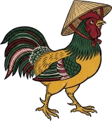

Gôm về bên nhau.
Quây tròn bữa ăn vui.
Giữa lòng Đà Nẵng, GÔM giữ lại nếp nhà miền Trung thuở cũ: mâm cơm đậm đà hương biển và đất Quảng, tiếng gọi nhau rôm rả đầu ngõ, và niềm vui khi món ngon đặt giữa bàn cho cả nhà cùng gắp.
- ĐẬM
- Trong hương vị mắm nêm, nghệ tươi, tiêu rừng
- TƯƠI
- Trong nguyên liệu ghe sớm & rau vườn quê
- VUI
- Trong trải nghiệm quây quần, chuyện nối chuyện


CHƯƠNG I
Tiếng gọi “gôm”
Một tiếng gọi thân thương từ nếp nhà miền Trung
Người miền Trung thương nhau không nói nhiều lời hoa mỹ, chỉ cần một tiếng “gôm” mộc mạc là đủ hiểu: gôm nhau lại cho đông vui, có khách ghé nhà thì so thêm đôi đũa, có miếng ngon thì gắp cho nhau miếng đầu tiên.
Từ tiếng gọi thân thương ấy, GÔM dựng nên một gian nhà ấm cúng mang hồn phố cổ miền Trung — nơi tường vôi vàng, gạch bông cũ, ánh đèn lồng dịu và mùi nước lèo thơm lừng níu bước chân người đi xa lẫn bạn bè gần kề.
“Món ngon đặt giữa bàn, câu chuyện nối câu chuyện. Hôm nay đi mấy người, ăn mâm chi hè?”


CHƯƠNG II
Bảng thực đơn nhà cũ
44 món ngon chia làm 7 nhóm — ăn chi hè, cứ chọn thả ga!
Thực Đơn GÔM · 44 Món Miền Trung
CHƯƠNG III
Phiếu bốc mâm & Chuyện giọng Quảng
Hôm nay đi mấy người, ăn mâm chi hè? Bốc một phiếu cho vui bàn!
Hôm nay ăn mâm chi hè?
Mâm 4 người gợi ý 5 món đủ khai vị, món chính & canh.
Nhấn “Bốc mâm ngay” để rút 4–6 món ngẫu nhiên từ bếp nhà GÔM!
CHƯƠNG IV
Bưu thiếp từ 25 Lê Hồng Phong
Gôm đủ người, mình gặp nhau hè!

Bản đồ phố Hải Châu — Gần cầu Rồng & trung tâm Đà Nẵng
Ghé nhà GÔM
- Địa chỉ
- 25 Lê Hồng Phong, Hải Châu, Đà Nẵng
- Giờ mở cửa
- 8:00 – 22:00 (Thứ 2 đến Chủ Nhật)
- Hotline
- Sắp cập nhật
- Nhắn gửi
- Đi đông hay đi ít cứ ghé, bếp luôn đỏ lửa chờ cả nhà!
“Có khách thì thêm đôi đũa, có món ngon thì gắp cho nhau miếng đầu tiên.”
Đặt bàn trước
Điền phiếu nhỏ bên cạnh để nhà GÔM sắp sẵn bàn ấm cúng và giữ chỗ đẹp cho cả nhà.
- Nhận đặt bàn từ 1 đến 20 khách
- Khung giờ phục vụ: 8AM – 10PM
- Hỗ trợ ghế trẻ em & mâm gia đình
Cảm ơn — GÔM chờ cả nhà hè!
Mã phiếu giữ bàn: